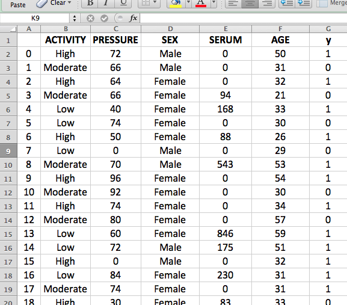
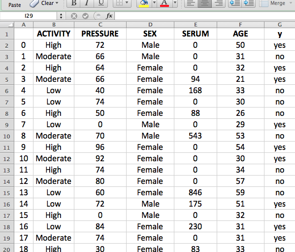

You are welcome to the Interactive Data Analytics Platform.
Below are some instructions on how to use the platform
Instructions for preparing your data file:
1. The platform currently only accepts comma-delimited text (*.txt) and csv (*.csv) files
2. The attributes (column headers) should be have distinct names, descriptions or titles
3. The attribute data can be numeric (e.g. 5, 36.2, -75.0, -1) or categorical (e.g. High/Low/Moderate, Married/Unmarried/Divorced/Widowed, e.t.c)
4. The outcome/label column header should be given the name/title y
5. The label data should be binary (e.g yes/no, true/false, 0/1, win/lose, off/on, etc.)
6. It is advisable for the platform user to remove identifying attributes such as Name, Patient Number, Address, etc
See examples below:


Using the platform:
1. Click on “Choose File” and navigate to the location of your data file
2. Select the file and click the “Submit” button
3. Depending on the number of entries and attributes in your data file, the analysis may take anywhere from a few seconds to a few minutes
4. When the analysis is done, the platform display a page containing a summary of the analysis
5. A link to the full report is also provided. Click on this link to get a comprehensive report.